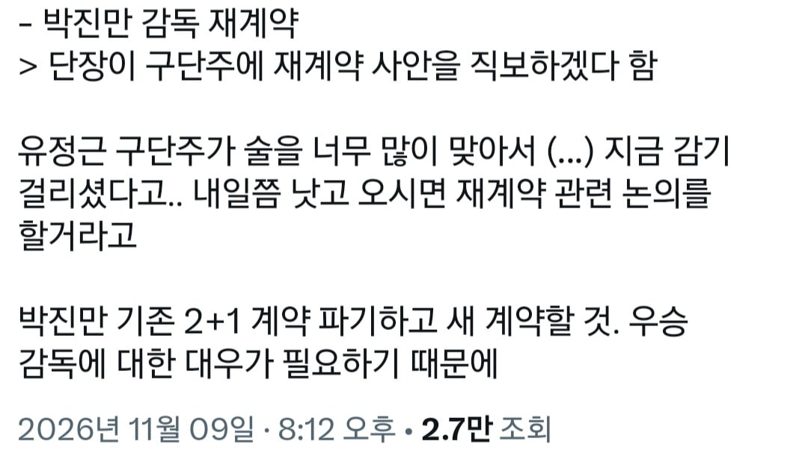
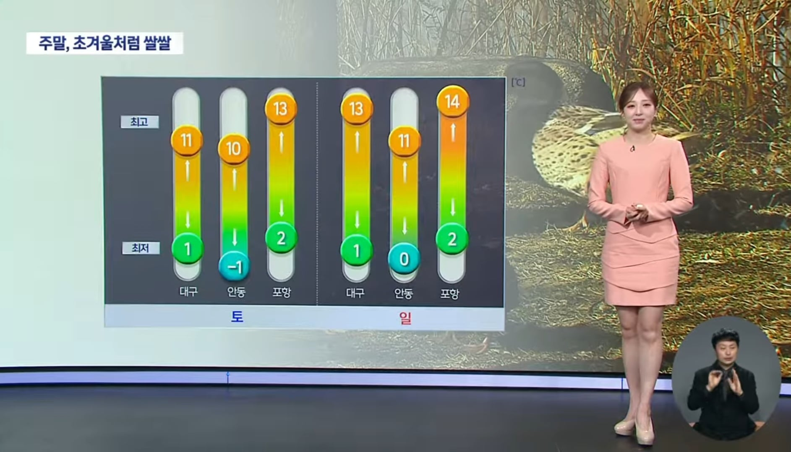
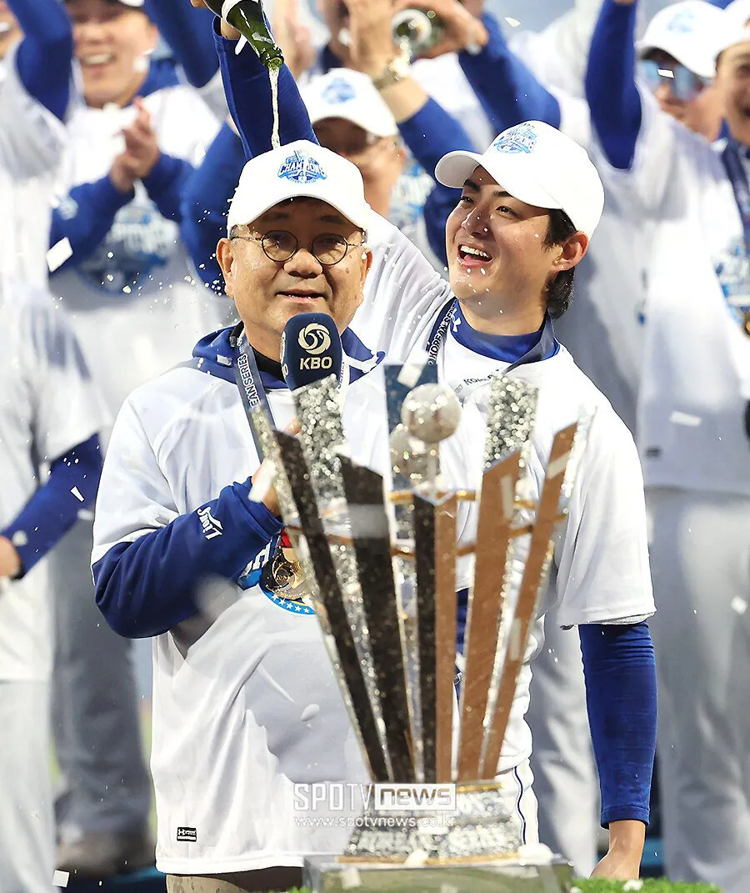

기자피셜 우승 세레머니때 구단주가 하도 술을 맞아대서 감기걸리고 앓아누웠다고...

당시 대구 기온
라팍은 지형 특성상 산 옆에 있는 구장이다보니 체감온도는 더 낮음

우승때 63세 구단주에게 샴페인밤 날린 구자욱ㅋㅋㅋㅋㅋㅋㅋ

기자피셜 우승 세레머니때 구단주가 하도 술을 맞아대서 감기걸리고 앓아누웠다고...

당시 대구 기온
라팍은 지형 특성상 산 옆에 있는 구장이다보니 체감온도는 더 낮음

우승때 63세 구단주에게 샴페인밤 날린 구자욱ㅋㅋㅋㅋㅋㅋㅋ
그래도 기분 좋았을듯 ㅎㅎ
술병으로 떄린 줄
ㅋㅋㅋㅋㅋㅋㅋㅋㅋㅋㅋ
마시고 아픈게 아니라서 다행인가 원
개웃기네 사과편지 써라 ㅋㅋㅋㅋㅋㅋㅋ
맛자욱 팬티는 안벗고..
구자욱 팔려가겠노
뭔 술병으로 맞았다는줄 ㅋㅋㅋ
구자욱 개신나서 개웃기네ㅋㅋㅋㅋㅋㅋ
구자욱이 가서 간병해라 ㅋㅋㅋㅋ
구자욱 이번 시리즈때 진짜 잘하더라
Mvp 받을만했음
개잘핵
술맞고도 행복해서 찐웃음ㅋㅋㅋㅋ
저날은 뭘해도 다 용서해줬을듯
왜 술병으로 후려친게 아님
술 마셨다는걸 저렇게 표현한건쥴알았는데 진짜 맞으셨네 ㅋㅋㅋㅋ
아 ㅋㅋㅋㅋㅋㅋ
어떻게 팀컬러가 부상;
추워보이긴 했음 시아시도 제대로 해놨을건데 제일 추울때인 해질녘에 맞았으니
저렇게 뿌리면 술 맛도 볼수 있겠네
구자욱 신나서 존나 뿌리긴하더라ㅋㅋㅋ 근데 2014년우승때도 맛자욱 삼성에 있었지않나? 처음 우승한것마냥 왜그럼
그때 막내라인일때 우승 한번 해보고 10년 넘게 계속 우승 못하다가 우승한거니 좋아할만하지 ㅋ
아하 그렇겠네
마셔서가 아니라 맞아서 ㅋㅋㅋㅋㅋㅋㅋㅋㅋㅋㅋㅋㅋㅋ
술을 맞는다는게 뭔가 했다 ㅋㅋㅋㅋㅋㅋㅋㅋㅋㅋㅋ